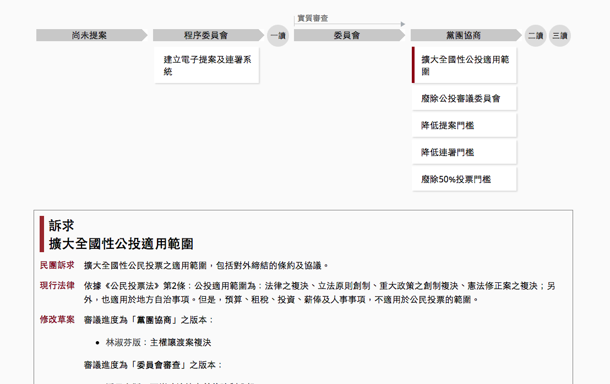
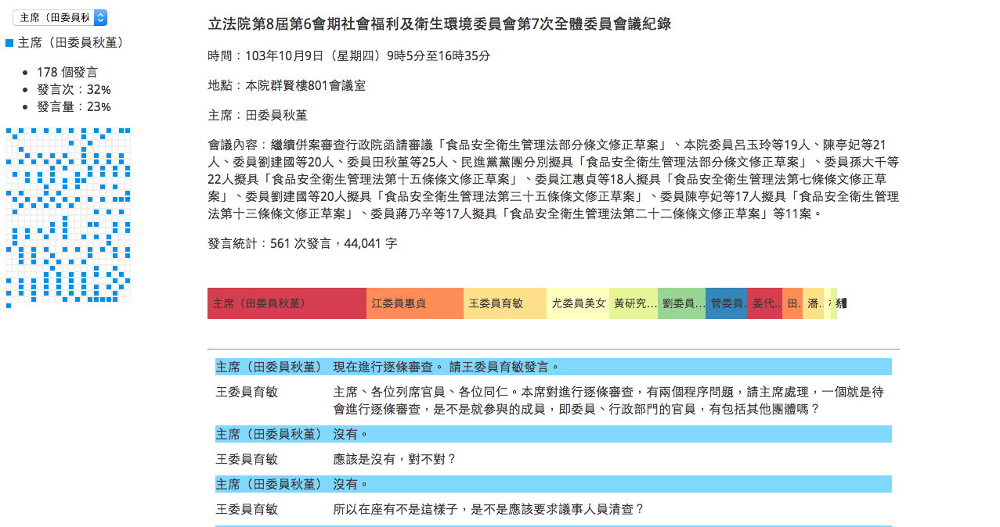

soidid.it
議題時間軸
用在新聞報導中的間軸，使用 google 表單做編輯。
DEMO
從議題找法案
新聞報導中常常會看到「吳育昇條款」「民法972」，把這些新聞中出現的議題詞彙對照到實際上相關的修法提案。
DEMO
立法院怎麼說
讀取 google spreadsheet，製作成立場表態的圖表。
DEMO
修法進度表 4
還權於民六個訴求，上一次委員會審查時各立委表態的狀況。
DEMO
修法進度表 3
還權於民六個訴求，相關提案版本的審議進度表
DEMO
修法進度表 2
還權於民六個訴求，相關提案版本的審議進度表
DEMO
修法進度表 1
還權於民六個訴求，相關提案版本的審議進度表

DEMO
矛盾大對決
把委員會的爭點、NGO 團體提出的「不好修法」& 立委的修法緣由，統統拿出來 PK。
DEMO
修法時間軸
現在這個法，為什麼是這樣？看看修法的前世今生
DEMO
委員會會議記錄呈現方式探索 4：單一條文 explore
某一個修法條文討論的過程，各立委發聲的狀況，以及最後初審通過的條文交互對照。
DEMO
委員會會議記錄呈現方式探索 3：討論條文聲量/趨勢比較
任選兩個人，看看他們的發言/互動 pattern 是什麼。
DEMO
委員會會議記錄呈現方式探索 2：貢獻圖
在這個主題上/在這次會議中，發言最多的立委/官員是誰呢？

DEMO
委員會會議記錄呈現方式探索 1：文字雲
最常出現的單詞
DEMO